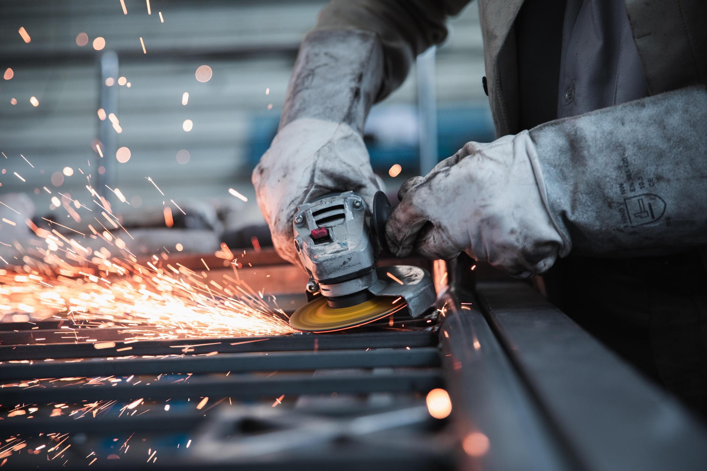
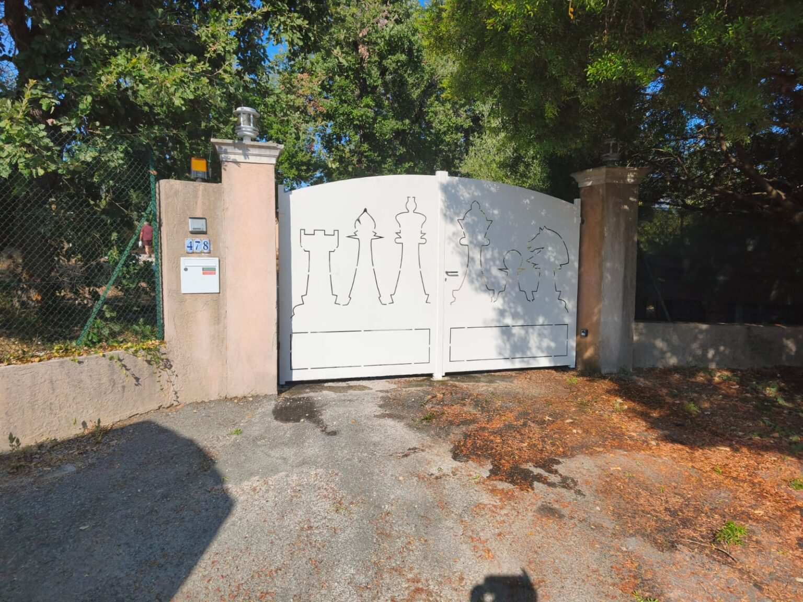
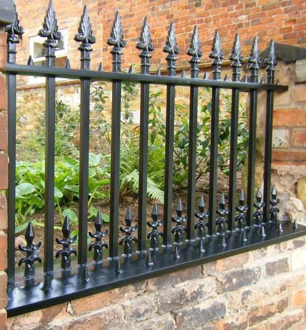

Une marque façonnée comme le métal.
Les repères visuels et éditoriaux de La Ferronnerie du Rouret : un artisanat précis, des ouvrages durables et une présence ancrée sur la Côte d’Azur.
Guide de référence pour les pages web et les supports de communication.La ferronnerie sur mesure, avec le sens du détail.
La Ferronnerie du Rouret conçoit, fabrique et pose des ouvrages métalliques pour les maisons et les espaces professionnels de Nice et de la Côte d’Azur.
Artisan ferronnier
Portails, garde-corps, clôtures, portes, rampes et marquises sur mesure.
Fait pour durer
Des ouvrages utiles, adaptés au lieu et soignés dans leurs finitions.
Côte d’Azur
Une présence locale, de l’atelier à la pose chez le client.
« L’élégance du métal, la qualité garantie. »
Le logo officiel
Utiliser le SVG fourni, sans le redessiner. Le logo original associe le noir et l’orange.
Conserver les proportions et une marge libre autour du signe.
Aucune version blanche officielle n’est fournie avec le site.
- Garder le ratio original.
- Prévoir une marge libre d’au moins 15 % de la largeur du logo.
- Employer une taille qui garde les détails lisibles.
- Étirer, incliner ou recadrer le logo.
- Changer ses couleurs avec un filtre.
- Le poser directement sur une photo chargée.
Le feu de l’atelier, la solidité du métal.
L’orange #D9672B est l’accent principal. Il s’applique aux boutons, repères et fonds des trois pictogrammes de valeur.
#D9672BAccent principal#B9551FSurvol et contraste#F6B287Accent sur fond sombre#1C1F22Titres et fonds sombres#374151Texte secondaire#F3F6F7Surfaces claires#FFFFFFFonds et réserves du logoPour un petit texte sur fond #D9672B, préférer le charbon. Le blanc sur cet orange offre un contraste insuffisant pour un texte courant ; utiliser #B9551F si le libellé doit être blanc.
Une seule famille, plusieurs rythmes.
Le site utilise Inter, avec une police sans empattement en secours. Les titres sont denses ; le texte courant garde un interligne généreux.
Interligne 175 %
Montrer la matière et le travail réel.
Privilégier les gestes d’atelier, les détails de finition et les réalisations installées. L’ouvrage de ferronnerie doit rester identifiable.



- Une lumière naturelle et un sujet net.
- Un ouvrage lié au service décrit.
- Un cadrage laissant de la place au texte.
- Les images de toiture ou d’un autre métier.
- Les photos suggérant un client non vérifié.
- Un titre blanc sur une photo claire sans voile sombre.
Des composants francs et lisibles.
Les boutons, repères et pictogrammes utilisent l’orange atelier. Les cartes à image gardent un cadrage régulier et un titre lisible.
Fond #B9551F, texte blanc.
Fonds circulaires #D9672B.
Photo en couverture, coins arrondis et voile sombre si nécessaire pour détacher le texte.
Parler comme un artisan qui connaît son métier.
Une voix directe, précise et rassurante. Expliquer ce qui est fabriqué, comment et pour quel usage. Les promesses restent vérifiables.
« Un portail en fer forgé conçu aux dimensions de votre entrée, fabriqué dans notre atelier et posé sur place. »
« La meilleure solution révolutionnaire pour tous vos projets. »
Sur mesure · fabriqué · posé · finition · atelier · devis clair. Ne pas présenter des noms, témoignages ou logos fictifs comme des références clients.
Fichiers de référence
Utiliser les fichiers du site comme source pour les nouveaux contenus.
Logo SVG
{kind=link}
Photographies
{kind=link}
{kind=link}
--brand-main: #D9672B · --brand-main-dark: #B9551F · --brand-main-light: #F6B287 · --_colors---deep-plum: #1C1F22